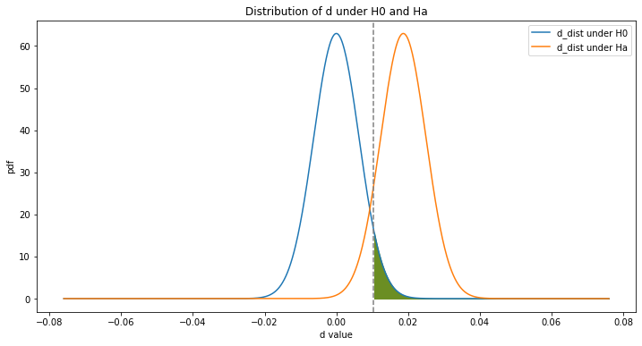
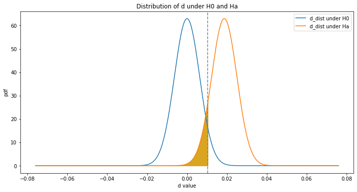
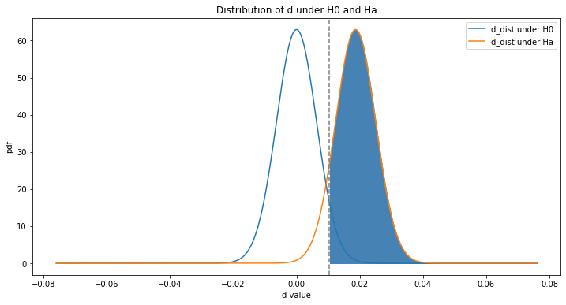

Main script to perform an A/B experiment using simulated data
Modules: N/A
Author: Cornelia Ilin
Email: cilin@wisc.edu
Date created: Oct 13, 2019
Citations (online sources):
- [1] info on Bernoulli and Binomial Random Variables, as well as Sampling Distribution of Sample Proportions
https://www.khanacademy.org/math/ap-statistics/sampling-distribution-ap/sampling-distribution-proportion/v/sampling-distribution-of-sample-proportion-part-1 - [2] info on hypothesis test for sample proportions
https://www.khanacademy.org/math/ap-statistics/two-sample-inference/two-sample-z-test-proportions/v/hypothesis-test-for-difference-in-proportions-example - [3] Intro to power in significance tests
https://www.khanacademy.org/math/ap-statistics/tests-significance-ap/error-probabilities-power/v/introduction-to-power-in-significance-tests - [4] The math behind A/B testing with example code
https://towardsdatascience.com/the-math-behind-a-b-testing-with-example-code-part-1-of-2-7be752e1d06f - [5] Udacity/Google course on A/B testing
https://classroom.udacity.com/courses/ud257/lessons/4028708543/concepts/39546791500923
Citations (persons): n/a
Step 1: Define functions
def z_val(sig_level, power = False):
""" A function that returns the z-value for given significance or power level
param sig_level: indicates the significance level, i.e. the probability to commit a type I error
return: z_onetail, z_twotail_minus, z_twotail_plus, z_power
"""
# draw normal distribution with mean = 0 and se = 1 (standardized random variable)
z_dist = scs.norm(0,1)
# define alpha
alpha = sig_level
# find the value of z for which the cdf = 1 - alpha
z_onetail = z_dist.ppf(1-alpha)
# find the value of z for which the cdf = alpha/2, and the cdf = 1-alpha/2
z_twotail_left = z_dist.ppf(alpha/2)
z_twotail_right = z_dist.ppf(1 - alpha/2)
# find the value of z for which the cdf = power
if power:
power_val = float(input("Introduce the desired level of power: "))
z_power = round(z_dist.ppf(power_val), 3)
else:
z_power = "n/a"
return (z_onetail, z_twotail_left, z_twotail_right, z_power)def z_distribution(sig_level):
""" A function that plots the distribution of the standardized random variable z
param sig_level: indicates the significance level, i.e. the probability to commit a type I error
return: none
"""
# draw normal distribution with mean = 0 and se = 1 (standardized random variable)
z_dist = scs.norm(0,1)
# define values for x and y axes
x = np.linspace(z_dist.ppf(0.01), z_dist.ppf(0.99), 100)
y = z_dist.pdf(x)
# define alpha
alpha = sig_level
# define arrow propoerties (used for annotations in figure)
arrow_properties = {
'facecolor': 'black',
'shrink': 0.1,
'headlength': 5,
'width': 1
}
## plot 1, one-tailed test
plt.subplot(2,1,1).set_title("Distribution of z_statistic with one-tail test")
lines = plt.plot(x, y)
#plt.title('The distribution of the z-statistic')
plt.ylabel("pdf")
# find confidence levels, find the value of z for which the cdf = 1 - alpha
z_onetail = z_val(alpha)[0]
# add fill
plt.fill_between(x, 0, y, color = "green", where = (x >= z_onetail))
# add annotation
annotation = plt.annotate('\u03B1 = 0.05',
xy = (1.98, 0.12),
xytext = (1.98, 0.20),
arrowprops = arrow_properties)
## plot 2, two-tailed test
plt.subplot(2,1,2).set_title("Distribution of z_statistic with two-tail test")
lines = plt.plot(x, y)
plt.ylabel("pdf")
plt.xlabel("z value")
# find confidence levels, find the value of z for which the cdf = alpha/2, and the cdf = 1-alpha/2
z_twotail_left = z_val(alpha)[1]
z_twotail_right = z_val(alpha)[2]
# add fill
plt.fill_between(x, 0, y, color = "green", where = (x <= z_twotail_left))
plt.fill_between(x, 0, y, color = "green", where = (x >= z_twotail_right))
# add annotation
annotation = plt.annotate('\u03B1 = 0.025',
xy = (-2.2, 0.12),
xytext = (-2.2, 0.20),
arrowprops = arrow_properties)
annotation = plt.annotate('\u03B1 = 0.025',
xy = (2.2, 0.12),
xytext = (2.2, 0.20),
arrowprops = arrow_properties)
plt.tight_layout() # adds more space between subplots
print("z value for one-tail test = ", round(z_onetail, 3))
print("z value for one-tail test = +-", round(z_twotail_right, 3))def d_distribution(alpha = False, beta = False, power = False, onetail = True):
""" A function that plots the d_distribution
param alfa: colors the alpha region(s) when True, i.e. P(reject H0 | H0 is true)
param beta: computes and colors the beta region when True, i.e. P(accept H0 | H0 is false)
param power: computes and color the power region when True, i.e. P(reject H0 | H0 is false)
param onetail: sets test to one-tail when True
return: none
Note that under H0: d = 0, under Ha: d = d_hat
"""
# define values for the x axis
#x = np.linspace(-0.08, 0.08, 100)
x = np.linspace(-12 * se_pool_hat, 12 * se_pool_hat, 1000)
# generate distribution under H0; d ~ N(0, SE_pool)
d_dist_0 = scs.norm(0, se_pool_hat).pdf(x)
# generate distribution under Ha: d ~ N(d_hat, SE_pool)
d_dist_a = scs.norm(d_hat, se_pool_hat).pdf(x)
# plot d_dist_0, d_dist_a
plt.subplots(figsize=(12, 6))
lines = plt.plot(x, d_dist_0, label = "d_dist under H0")
lines = plt.plot(x, d_dist_a, label = "d_dist under Ha")
# add title, axis labels, and legend
plt.title("Distribution of d under H0 and Ha")
plt.legend()
plt.xlabel('d value')
plt.ylabel('pdf')
# draw confidence intervals under H0
# remeber ci = d +- z*se_pool, under H0: d = 0
# for alpha = 0.05, z_onetail = 1.65, z_twotail_left = -1.96, z_twotail_right = 1.96 (see output z_dist() function)
if onetail:
ci_right = 0 + 1.65 * se_pool_hat
plt.axvline(x = ci_right, linestyle = "--", color = "grey")
else:
ci_right = 0 + 1.96 * se_pool_hat
ci_left = 0 - 1.96 * se_pool_hat
plt.axvline(x = ci_left, linestyle = "--", color = "grey")
plt.axvline(x = ci_right, linestyle = "--", color = "grey")
# compute alpha
# alpha = the area under H0, to the left of ci_left and to the right of ci_right
if alpha:
print("Green shaded area: H0 is false")
if onetail:
plt.fill_between(x, 0, d_dist_0, color = "olivedrab", where = (x > ci_right))
else:
plt.fill_between(x, 0, d_dist_0, color = "olivedrab", where = (x < ci_left))
plt.fill_between(x, 0, d_dist_0, color = "olivedrab", where = (x > ci_right))
# compute beta
# beta = the area under Ha, to the left of ci_right
if beta:
beta_val = scs.norm(d_hat, se_pool_hat).cdf(ci_right) #finds the P(d < ci_right) under Ha
print("Beta =", round(beta_val,3))
print("Yelolw shaded area: Type II error area: P(accept H0|H0 is false)")
plt.fill_between(x, 0, d_dist_a, color = "goldenrod", where = (x < ci_right))
# compute power
# power = 1 - beta = the area under Ha, to the right of ci_right
if power:
power = 1 - scs.norm(d_hat, se_pool_hat).cdf(ci_right) #finds the P(d >= ci_right) = 1 - P (d < ci_right) under Ha
print("Power =", round(power,3))
print("Blue shaded area: Power = 1- Beta, P(reject H0|H0 is false)")
plt.fill_between(x, 0, d_dist_a, color = "steelblue", where = (x > ci_right))Step 2: Import required packages
import scipy.stats as scs
import pandas as pd
import numpy as np
import matplotlib.pyplot as plt
import random
%matplotlib inlineStep 3: Define the A/B experiment
Assume that facebook.com/business runs an A/B test to see if changing the color of the “create an ad” button, increases the click-thorugh probability.
Let’s assume that the structure of the facebook.com/business website is as follows: [1] a homepage that includes the “create an ad” button; if create an ad is chosen, then [2] a webpage to “create new account”, and if new account is created, then [3] a webpage to buy adds.
To run the A/B experiement, the engineers at facebook.com/business create two versions of the homepage. One where the “create an ad” button is orange (existing version), and one where it is blue (experimental version). The former is served to the control users, and the later to the users in the treatment group.
Unfortunately, we don’t have this data available, so we will first need to generate it.
We assume that the total number of users that participate in the A/B experiement is 2000, equally devided between the control and treated groups. This means that the probability to be assigned to either the treatment or control group is 0.5.
Step 4: Generate toy data
Notations:
- group A = control patients
- group B = treated patients
- p_c = click-though probability for the control group
- p_t = click-thorugh probability for the treated group
Step 4.1: Set seed
random.seed(1234)Step 4.2: Create user_group column
(with values A and B)
# draw from Bernoulli distribution
user_group = scs.bernoulli.rvs(p = 0.4, size = 10000).tolist()
# rename values, such that 0 = A and 1 = B; keep track of the length of group A and B
len_A = 0
len_B = 0
for index, val in enumerate(user_group):
if val == 0:
user_group[index] = "A"
len_A += 1
else:
user_group[index] = "B"
len_B += 1Step 4.3: Create user_click column
(= 1 if a unique user clicked “create an ad” at least once)
# first define the desired p_c and p_t, assuming p_t > p_c
p_c = 0.10
p_t = 0.12
# draw user_click column from Bernoulli distribution for both group A and B
user_click_A = scs.bernoulli.rvs(p_c, size = len_A).tolist()
user_click_B = scs.bernoulli.rvs(p_t, size = len_B).tolist()Step 4.4 Combine user_group and user_click columns
create a dataframe
# merge the two columns
user_click = []
index_A = 0
index_B = 0
for index, val in enumerate(user_group):
if val == "A":
user_click.append(user_click_A[index_A])
index_A += 1
else:
user_click.append(user_click_B[index_B])
index_B += 1
# create dataframe
data = pd.DataFrame({"user_group": user_group, "user_click": user_click}) # print the first five rows:
data.head(5)| user_group | user_click | |
|---|---|---|
| 0 | B | 0 |
| 1 | B | 0 |
| 2 | B | 1 |
| 3 | A | 0 |
| 4 | A | 0 |
Step 5: Summary statistics
We assume our toy data is the real data of facebook.com/business‘ experiment
Notation:
- n_c = sample size control group
- n_t = sample size treated group
- x_c = number of users in the control group who click “create an ad”
- x_t = number of users in the treated group who click “create an ad”
- p_c_hat = estimated click-thorugh propbability of control group
- p_t_hat = estimated click-thorugh probability of treated group
Step 5.1: Sample sizes
n_c = len_A
n_t = len_B
print("n_c =", n_c, end = "\n")
print("n_t =", n_t, end = "")n_c = 6038
n_t = 3962Step 5.2: Sum of user_click by group
x_c = 0
x_t = 0
for ind in data.index:
if data["user_group"][ind] == "A" and data["user_click"][ind] == 1:
x_c += 1
if data["user_group"][ind] == "B" and data["user_click"][ind] == 1:
x_t += 1
print("x_c = ", x_c, end = "\n")
print("x_t = ", x_t, end = "") x_c = 605
x_t = 471Step 5.3: Click-thourgh probability by group
Def: click-thorugh probability = unique users who click / unique total users
We can think of the click-through probability as being the sample proportion
p_c_hat = x_c/n_c
p_t_hat = x_t/n_t
print("p_c_hat = ", round(p_c_hat, 2), end = "\n")
print("p_t_hat = ", round(p_t_hat, 2), end = "") p_c_hat = 0.1
p_t_hat = 0.12Step 6: Hypothesis testing
We want to see if chaging the color of the “create an ad” has any statistically significant effects on the click-through probability.
Remember that “create an ad” button is orange for the control gorup, and blue for the the treated group.
Our hypothesis is as follows:
H0: p_c = p_t, in other words p_c - p_t = 0
Ha: p_t - p_c != 0 (try both one tail and two tail test)
Let:
d = p_c - p_t
alpha = P(reject H0 | H0 is true)
beta = P(accept H0 | H0 is false)
power = 1 - beta = P(reject H0 | H0 is false)
To test the hypthesis we construct the z_statistic ~ N(0, 1)
Step 6.1 Compute the z_statistic
We assume the followings:
- H0 is true
- random variables
- iid
Then,
z = (p_t_hat - p_c_hat) - 0/ SE(p_t_hat - p_c_hat)
Note:
- For a Bernoulli random variable: mean = p; variance = p(1-p); se = sqrt(p(1-p))
- For Binomial random variable: mean = n p; variance = n p(1-p) = sqrt(n * (p(1-p))
- Under the Central Limit Theorem, as the number of samples increases, the distribution of the sample proportion means (p_hat), will be ~ N(p, sqrt(p(1-p)/n))
Thus,
se(p_t_hat - p_c_hat) = sqrt(p_t_hat(1-p_t_hat)/n_t) + sqrt(p_c_hat(1-p_c_hat)/n_c)
Note:
- cov(p_t_hat, p_c_hat) = 0 due to iid assumption.
- because we assume that H0 is true (p_t = p_c), then we can compute SE_pool
Thus,
se_pool = sqrt(p_pool_hat(1-p_pool_hat) * (1/n_t + 1/n_c)
where,
p_pool_hat = (x_c + x_t)/(n_c + n_t)
# compute d = p_t_hat - p_c_hat
d_hat = p_t_hat - p_c_hat
print("d_hat =", round(d_hat, 2))d_hat = 0.02# compute p_pool_hat
p_pool_hat = (x_c + x_t)/(n_c + n_t)
print("p_pool_hat = ", p_pool_hat)p_pool_hat = 0.1076# compute se_pool_hat
se_pool_hat = np.sqrt(p_pool_hat * (1-p_pool_hat) * (1/n_c + 1/n_t))
print("se_pool_hat = ", round(se_pool_hat, 2))se_pool_hat = 0.01# compute the z-statistic
z_statistic = d_hat/se_pool_hat
print("z_statistic =", round(z_statistic, 2))
print("Remeber that the z-statistic is ~ N(0, 1)")z_statistic = 2.95
Remeber that the z-statistic is ~ N(0, 1)Step 6.2: Find p_val. Test if H0 is true
Define p_val:
- if one-tailed test: p_val = P(Z >= z) = 1 - P(Z < z)
- if two-tailed test: p_val = P(Z <= -z or Z >= z) = 1 - P(-z < Z < z) = 1- [P(Z < z) - P (Z < -z)]
For a one-tailed test:
- if p_val > alpha, accept H0
- if p_val < alpha, reject H0
For a two-tailed test:
- if p_val > alpha/2, accept H0
- if p_val < alpha/2, reject H0
# print message
accept = "Accept H0. p_val > alpha\n"
reject = "Reject H0. p_val < alpha\n"
# z_distribution
z_dist = scs.norm(0,1)
# alpha level
alpha = 0.05
## one-tailed test, find P(Z < z_statistic) and then compute p_val
cdf_onetail = z_dist.cdf(z_statistic)
p_val_onetail = 1 - cdf_onetail
print("one-tail test: p_val = ", round(p_val_onetail, 4), end = "\n")
if p_val_onetail < alpha:
print(reject)
else:
print(accept)
## two_tailed test, find P (Z < z) - P (Z < -z), then compute p_val
cdf_twotail = z_dist.cdf(z_statistic) - z_dist.cdf(-z_statistic)
p_val_twotail = 1 - cdf_twotail
print("two-tailed test: p_val = ", round(p_val_twotail, 4), end = "\n")
if p_val_twotail < alpha:
print(reject)
else:
print(accept)one-tail test: p_val = 0.0016
Reject H0. p_val < alpha
two-tailed test: p_val = 0.0032
Reject H0. p_val < alpha
Step 6.3: Plot the distribution of d under H0 and Ha
d_distribution(alpha = True)Green shaded area: H0 is false
d_distribution(beta = True)Beta = 0.097
Yelolw shaded area: Type II error area: P(accept H0|H0 is false)
d_distribution(power = True)Power = 0.903
Blue shaded area: Power = 1- Beta, P(reject H0|H0 is false)
Step 7: Find appropiate sample size for A/B test
Note: user introduces desired beta, power, alpha, one-tail or two-tail test parameters
# define beta, power, and alpha
beta = 0.2
power = 1 - beta
alpha = 0.05
one_tail = False
# find the value of z that corresponds to the value of the power level (user input required)
z_power = z_val(alpha, power = True)[3]
print("The value of the z statistics for this level of power is", z_power)
# find the value of z that corresponds to the value of alpha
if one_tail:
z_alpha = z_val(alpha)[0]
else:
z_alpha = z_val(alpha)[2]
# find sample size
n = 2 * p_pool_hat * (1- p_pool_hat)*(z_power + z_alpha)**2 * (1/(p_t_hat - p_c_hat)**2)
print("The sample size needed for the parameters listed above =", round(n,2))Introduce the desired level of power: 0.8
The value of the z statistics for this level of power is 0.842
The sample size needed for the parameters listed above = 4320.61